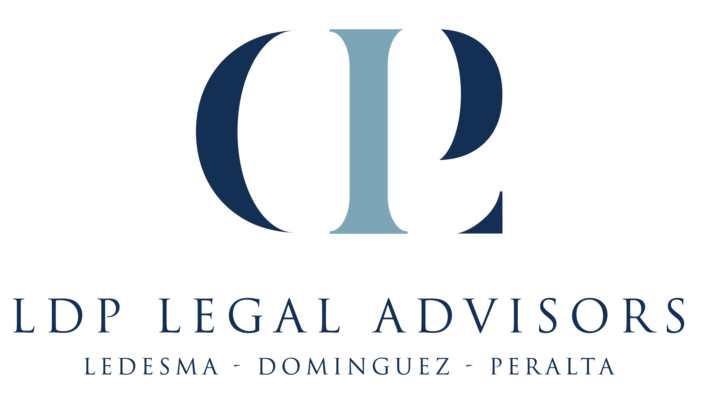

Santo Domingo · República Dominicana
Santo Domingo · Dominican RepublicSanto Domingo · Dominikanische Republik
OficinaOfficeBüro
Calle Haim López Penha No. 32
Torre Odonto-Dom · 2do Nivel
Paraíso, Santo Domingo, D.N.
© MMXXVI · LDP Legal Advisors
Aviso legal · PrivacidadLegal notice · PrivacyRechtshinweis · Datenschutz